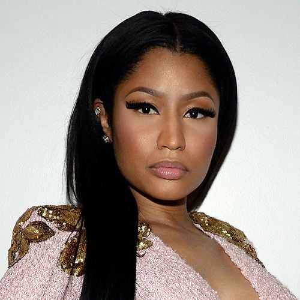

Nicki Minaj
Born: 08 December 1982
Age:
Years Active: 2002–present
Genre/s: Hip-hop, pop, R&B
Label/s: Republic, Heavy On It, Young Money, Cash Money
Onika Tanya Maraj-Petty (born December 8, 1982), known professionally as Nicki Minaj, is a Trinidadian rapper, singer, and songwriter. Dubbed the "Queen of Rap" and one of the most influential rappers of all time, she is noted for her dynamic rap flow, witty lyrics, musical versatility, and alter egos, and is credited as a driving force in the mainstream resurgence of female rap since the 2010s.
Raised in New York City, Minaj began rapping professionally in the early 2000s and gained recognition with her three mixtapes between 2007 and 2009. Minaj's debut studio album, Pink Friday (2010), opened with the largest female rap album sales week of the 21st century, topped the US Billboard 200, and spawned the single "Super Bass". She explored dance-pop on her second US number-one album, Pink Friday: Roman Reloaded (2012), which produced the top-five single, "Starships". She returned to her hip-hop roots with The Pinkprint (2014) and Queen (2018), which yielded the singles "Anaconda" and "Chun-Li". Minaj achieved her first Billboard Hot 100 number-one singles with the 2020 duets "Say So" and "Trollz"; the former was the first female rap collaboration to top the chart. Her fifth album, Pink Friday 2 (2023), made her the female rapper with the most US number-one albums (three) and spawned her first solo US number-one single, "Super Freaky Girl". Its concert tour became the highest-grossing by a female rapper and one of the top five highest-grossing tours by a rapper in history.
Minaj is one of the world's best-selling music artists and the best-selling female rapper, with over 100 million records sold. She has over 54 million certified singles sold in the US and three diamond-certified singles, and in 2024 became the first female rapper with multiple diamond-certified solo songs (two) by the RIAA. In 2023, Billboard and Vibe ranked Minaj as the greatest female rapper of all time. Her various accolades include a Brit Award, five Billboard Music Awards, nine American Music Awards, eight MTV Video Music Awards (including the Michael Jackson Video Vanguard Award), eleven BET Awards, a Soul Train Music Award, and three Guinness World Records. Time named her one of the 100 most influential people in the world in 2016, and she was honored with the Billboard Women in Music Game Changer Award in 2019.
Minaj founded the record label imprint Heavy On It in 2023. Outside of music, her other endeavors include a fragrance line, a press on nails line, a Loci sneakers collection, and the radio show Queen Radio (2018–2023). She has also voice acted in the animated films Ice Age: Continental Drift (2012) and The Angry Birds Movie 2 (2019), and acted in the comedy films The Other Woman (2014) and Barbershop: The Next Cut (2016). On television, she served as a judge on the twelfth season of American Idol (2013). Her outspoken views have received significant media attention.